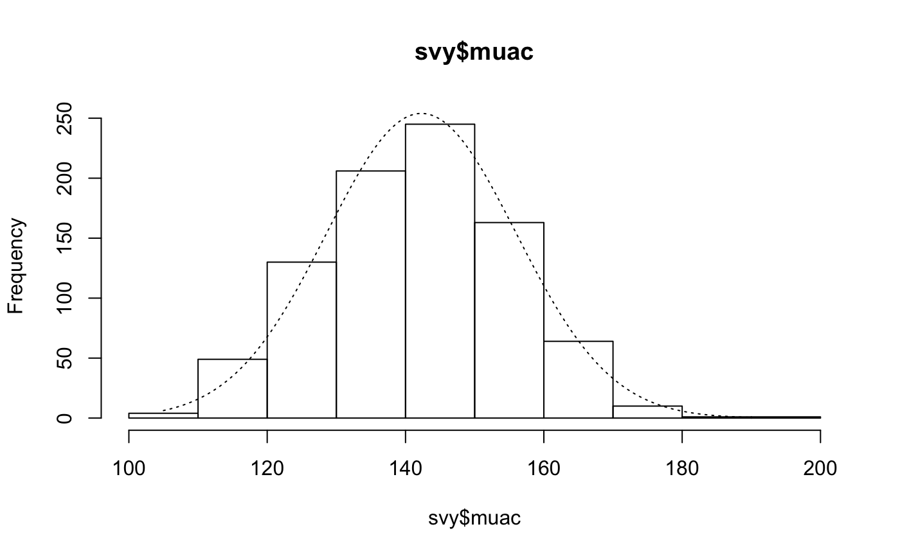
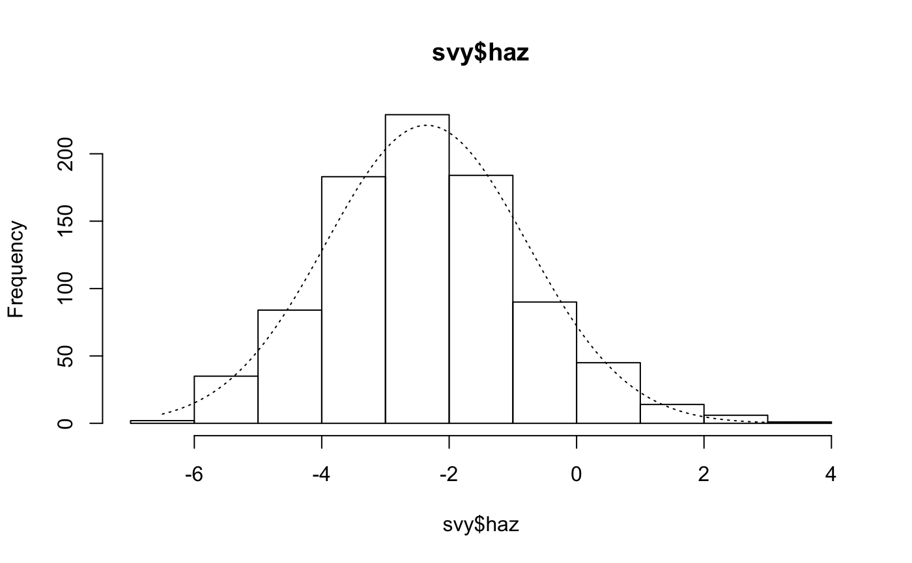
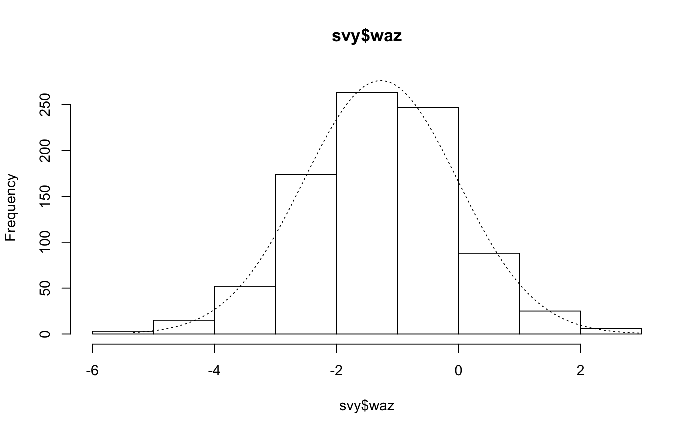
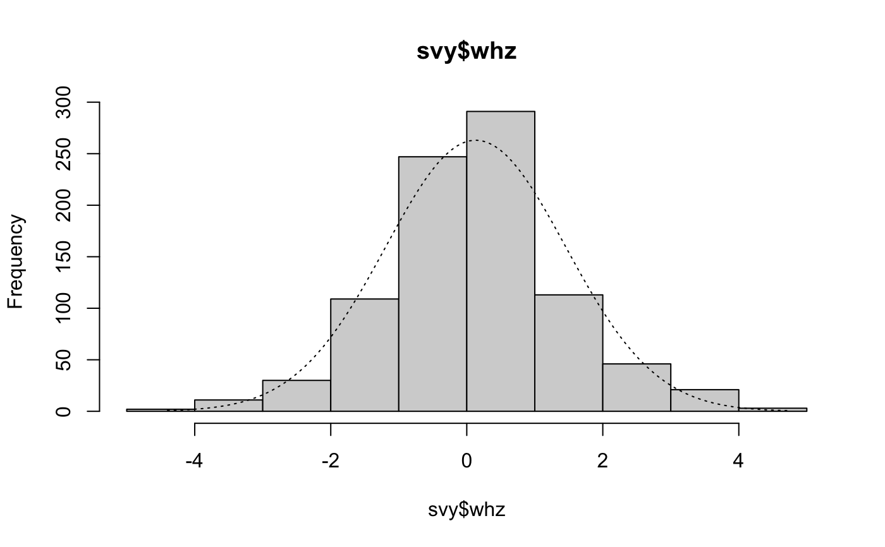

R/histNormal.R
histNormal.RdHistogram with normal curve superimposed to help with “by-eye” assessments of normality of distribution
histNormal( x, xlab = deparse(substitute(x)), ylab = "Frequency", main = deparse(substitute(x)), breaks = "Sturges", ylim = NULL )
| x | A numeric vector |
|---|---|
| xlab |
|
| ylab |
|
| main | Plot title |
| breaks | |
| ylim |
|
# histNormal() with data from a SMART survey in Kabul, Afghanistan # (dist.ex01) svy <- dist.ex01 histNormal(svy$muac)histNormal(svy$haz)histNormal(svy$waz)histNormal(svy$whz)